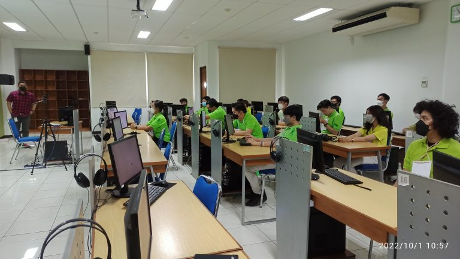
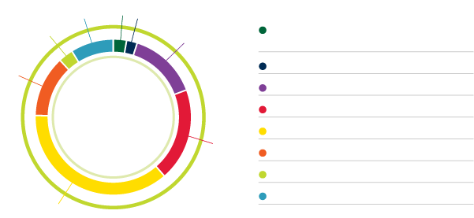

“Make IT Smarter”
Sigap menjawab tantangan global

Perkembangan teknologi informasi menuntut tenaga ahli yang cerdas dan andal di bidangnya. Program Studi S-1 Teknik Informatika mempersiapkan lulusan yang sigap menjawab tantangan global ini. Mahasiswa Program Studi S-1 Teknik Informatika (S-1 IT) akan mempelajari konsep ilmu computer science serta implementasi praktis software engineering.
Konsep & Praktik yang Seimbang
Proses pembelajaran seimbang antara konseptual dan praktik di laboratorium, menyiapkan mahasiswa agar siap berkarya secara maksimal di dunia kerja/usaha setelah menyelesaikan kuliah. Lulusan akan memiliki keahlian pengembangan aplikasi mobile/desktop application, berbasis intelligent computing & network security. Keahlian pengembangan software (Software Methods and Technologies) menjadi fokus utama perkuliahan, berikut ragam keahlian yang dipelajari selama perkuliahan:

Kualitas Internasional
Program Studi S-1 IT menjalin hubungan kerja sama dengan berbagai institusi serta vendor di tingkat nasional maupun internasional, seperti Cisco Academy, IBM Academic Initiative, dan EC-Council Academia. Kerja sama ini menjadi peluang bagi mahasiswa untuk mendapatkan keahlian praktis yang sesuai dengan perkembangan IT terkini.
Dosen-dosen yang mengajar di S-1 IT adalah lulusan perguruan tinggi ternama dalam dan luar negeri. Prestasi-prestasi mahasiswa S-1 IT bukan hanya diakui di tingkat nasional tapi juga sudah dikenal di ajang internasional, melalui sejumlah prestasi di berbagai kompetisi IT seperti ACM ICPC, CompFest, dan Gemastik.
Dengan pengalaman dan semangat mengajar yang dimiliki, para dosen bukan hanya menjadi pendidik, tapi menjadi sahabat bagi para mahasiswa.
Lulusan S-1 IT sudah banyak yang berhasil menjadi wirausahawan, maupun bekerja di berbagai perusahaan di tingkat nasional, multinasional, bahkan skala internasional. Masa tunggu lulusan untuk memperoleh pekerjaan atau menjadi wirausahawan juga terhitung relatif singkat.